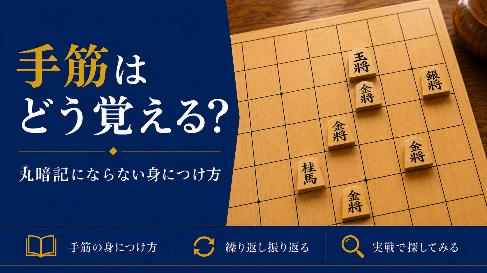

手筋はどう覚える?丸暗記にならない身につけ方

「初段の壁」の記事で、級位者と初段の差を分けるポイントの一つとして「手筋の引き出しの数」を挙げました。今回は、この手筋をどうやって増やしていけばいいのか、具体的な方法をお伝えします。
そもそも手筋とは何か
手筋とは、特定の局面で使える「決まった形の良い手」のことです。一つひとつの手筋は、覚えてしまえば一瞬で判断できる武器になります。逆に言えば、手筋を知らないと、毎回一から自力で考えなければならず、時間もかかりますし、見落としも増えてしまいます。
手筋はどうやって身につけるのか
手筋は「問題を解きながら」覚えるもの
手筋は、『ひと目の手筋』のような次の一手形式の本を解いたり、実戦や棋譜を通して触れたりする中で、少しずつ定着していくものです。「この局面ではこう指すのが正解」という問題に取り組み、答え合わせをする、この繰り返しも身につける方法の一つです。
気づけなかった手筋こそ、繰り返し振り返る
問題を間違えたときも、実戦で気づけなかったときも、その時点ではまだその手筋が身についていない証拠です。問題であれば少し期間を空けてもう一度解き直し、実戦であれば感想戦で振り返るなどして、同じ場面に何度も触れ直しましょう。パッと手が浮かぶようになれば、実戦でも使える状態になっています。
実戦で意識的に探してみる
対局中、本や棋譜で見た形に似た局面が来たら、一度立ち止まって「あの手筋が使えないか」と意識的に探してみましょう。最初はうまく見つけられなくても、この「探す」という行為自体が、次第に自然な感覚に変わっていきます。
まとめ
手筋は、覚えるだけでは意味がありません。問題や実戦を通して触れ、気づけなかった場面を繰り返し振り返り、少しずつ着実に増やしていく。この積み重ねが、初段への近道になります。
初心者から有段者まで、幅広く指導しています。気になる方は、まずは無料体験からお試しください。
無料体験を申し込む